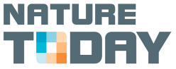

Animez votre environnement
GrowApp est une application qui permet de faire des animations d'arbres, de jardins et de paysages en prenant des photos avec son smartphone. L'appli transforme ces photos en vidéo d'images accélérées qui montre les changements au fil des saisons et des années. En s'amusant à faire des animations dans son jardin, on aide ainsi les scientifiques à mieux comprendre l’impact du changement climatique sur l’environnement.
Sept espèces ciblées
Soutenez les climatologues en prenant en photo les 7 espèces suivantes en priorité :En insérant une photo, veillez à lui donner le bon tag : #tag “espèce” dans la zone de texte ainsi que #tag “GLOBE” et #tag “nom de l’école” si vous participez dans le cadre de GLOBE.
- Chêne pédonculé (Quercus robur), #oak
- Noisetier commun (Corylus avellana), #hazel
- Hêtre commun (Fagus sylvatica), #beech
- Bouleau verruqueux (Betula pendula), #birch
- Cerisier acide (Prunus cerasus), #cherry
- Tilleul à petites feuilles (Tilia cordata), #lime
- Figue (Ficus carica), #fig
Plus d’informations
Pour plus d’informations et pour accéder à la carte interactive des animations, aller sur: www.growapp.todayEcoles
Les écoles peuvent se joindre à la campagne phénologie GLOBE.Développement
Cette application est une idée de la Fondation GLOBE Hollande. Développement technique de l’application Geodan et Forget the fishContact
info@growapp.todaySupport
L’appli est financée et soutenue par un consortium de partenaires:



Contributions :
- Logiciel de cartes client
- OpenLayers 4.0, proj4
- Logiciel MapServer
- Mapproxy
- Carte d'arrière-plan
- Openstreetmap, license
- Traitement et animation d'images
- GraphicsMagic and GM for nodejs
- Navigation photo
- Photoswipe
- Plans de cartes additionnels
- Nasa worldview
- Graphisme et icônes
- Material Design Lite et Material Design Icons
- Framework application native
- Apache cordova et Android SDK et community camera plugin
- Base de données
- Postgres et PostGIS
- Serveur personnalisé
- NodeJs
- Logo
- Basé sur cette conception